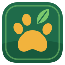
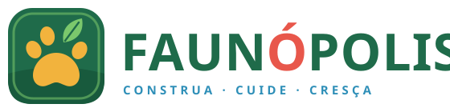
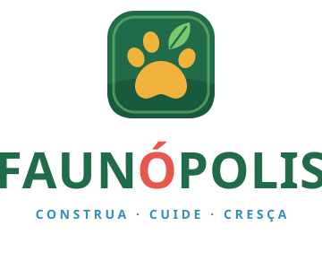
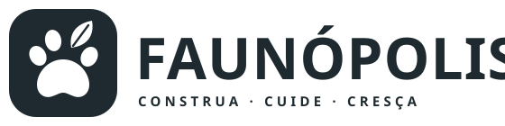

1. Nome e conceito

FAUNÓPOLIS
Fauna + -pólis (do grego, “cidade”): a cidade da fauna. O nome traduz a fantasia central do jogo — construir e administrar um lugar vivo, organizado como uma pequena cidade, onde cada recinto é um bairro, cada caminho é uma rua e cada animal é um morador que precisa de cuidado.
O nome é curto, fácil de pronunciar em português, evoca gestão e crescimento (como os jogos de cidade que inspiram sua leitura visual) e não depende de nenhuma marca existente. Grafia oficial: Faunópolis (com acento); em contextos sem acentuação (URLs, nomes de arquivo): faunopolis.
2. Essência da marca
Propósito
Mostrar que crescer só vale a pena quando todos ficam bem: animais, visitantes e as contas do parque.Promessa
Um zoológico que é seu, bonito de ver, fácil de ler e cheio de decisões interessantes.Personalidade
Acolhedora · curiosa · organizada · otimista · responsável. Nunca cínica, nunca infantilizada.Valores
- Cuidado: animais são seres que exigem atenção, não enfeites.
- Clareza: a informação certa, no lugar certo, na hora certa.
- Descoberta: sempre há uma nova espécie, bioma ou melhoria a conquistar.
- Equilíbrio: bem-estar, experiência, finanças e ambiente se influenciam.
3. Logotipo

Construção do símbolo
- Ladrilho arredondado (quadrado de 120 u com cantos de raio 30): referência direta à grade de tiles em que o zoológico é construído. É o “lote” do jogador.
- Faixa inferior mais escura: o horizonte do terreno, sugerindo chão e paisagem.
- Contorno interno em Verde Broto a 55%: a cerca do recinto.
- Pegada dourada: almofada principal e três dedos em Ouro Savana — a presença animal.
- Folha no lugar de um dedo: a natureza e o habitat fazem parte do animal. É o detalhe-assinatura da marca.
Logotipo (wordmark)
“FAUNÓPOLIS” em Fredoka Bold, caixa-alta, espaçamento +1. O Ó é destacado em Coral Arara (ou Ouro Savana em fundos escuros), marcando o encontro entre fauna e pólis. A tagline usa Nunito ExtraBold em caixa-alta, espaçamento amplo (+4), em Azul Lagoa.
4. Versões
Principal (horizontal) — fundos claros. Uso preferencial.
Negativa — fundos escuros (menu do jogo, vídeos, redes sociais).

Vertical — espaços estreitos, cartazes, capas.
Símbolo — ícone do aplicativo, favicon, avatar, barra do jogo.

Monocromática escura — impressão em uma cor, carimbos, documentos.

Monocromática branca — sobre fotos ou cores da paleta.
5. Área de proteção e tamanhos mínimos
A área de proteção mínima ao redor do logotipo é x = ¼ da altura do símbolo. Nenhum texto, borda ou imagem deve invadir essa área.
| Versão | Mínimo digital | Mínimo impresso |
|---|---|---|
| Horizontal | 160 px de largura | 35 mm |
| Vertical | 110 px de largura | 25 mm |
| Símbolo | 16 px (favicon) · ideal ≥ 32 px | 8 mm |
Abaixo dos mínimos da versão horizontal, use só o símbolo. Abaixo de 24 px, a tagline deve ser omitida.
6. Usos incorretos
Também não é permitido: recriar o logotipo com outra fonte, separar a folha da pegada, trocar a folha por outro elemento, ou combinar o logotipo com logos de terceiros sem área de proteção.
7. Paleta de cores
Cores principais
HEX #1F6B4A · RGB 31 107 74
CMYK 71 0 31 58
Cor-mãe: símbolo, títulos, botões primários, painéis de destaque.
HEX #F2B33D · RGB 242 179 61
CMYK 0 26 75 5
Pegada, estrelas de reputação, seleção, conquistas e prêmios.
HEX #FFF4DE · RGB 255 244 222
CMYK 0 4 13 0
Fundos claros, texto sobre escuro.
Cores de apoio
Folha do símbolo, estados positivos, receitas, “bom”.
Acento do “Ó”, alertas, despesas, ações destrutivas.
Tagline, informação, água, limpeza, links.
Fundo da interface do jogo, textos sobre claro.
Proporção de uso
Grafite 40% · Verde Selva 25% · Creme 15% · Ouro 8% · Broto 5% · Lagoa 4% · Coral 3%. Ouro e Coral são acentos: use-os com moderação para que mantenham força.
Cores de estado (interface)
≥ 70 Bom 45–69 Atenção 25–44 Ruim < 25 Crítico — usadas em todas as barras de indicadores e lentes, sempre acompanhadas de número ou texto (nunca apenas cor).
Cores dos biomas
🦁 Savana #F2B33D 🦜 Brasil #1F6B4A 🐊 Pantanal #2E8FB8 🐪 Árido #D9A35B 🐯 Ásia #C8553D 🐧 Polar #7FC8E8 🐉 Fantástico #8A5CD1
8. Tipografia
Display — Fredoka (500/600/700)
Aa Bb Cc 123
Títulos, logotipo, números grandes (saldo, capacidade “5 / 15”), botões grandes. Arredondada e amigável, ecoa os cantos do símbolo.
Texto — Nunito (400/600/700/800)
Aa Bb Cc 123 — O recinto das capivaras está próximo da capacidade máxima.
Textos corridos, painéis, tooltips, tabelas e a tagline (ExtraBold, caixa-alta, espaçamento +4).
Ambas são fontes livres (SIL Open Font License) disponíveis no Google Fonts. Alternativas de sistema (quando offline): Fredoka → “Trebuchet MS”/“Segoe UI” semibold; Nunito → “Segoe UI”. Hierarquia: H1 42 px · H2 28 px · H3 20 px · corpo 14–15 px · legenda 11–12 px.
9. Linguagem visual
- Vista superior (top-down) e grade: tudo é pensado sobre tiles; formas organizadas, leitura espacial clara.
- Ilustração vetorial chapada: formas simples, cantos arredondados, uma sombra suave deslocada para baixo-direita (luz vinda do alto-esquerda), um realce claro no alto.
- Silhuetas reconhecíveis: cada animal é identificável pela forma e pelo padrão (listras, manchas, rosetas, juba, tromba, bico), mesmo pequeno.
- Cores por bioma: cada área temática tem chão e vegetação próprios, distinguíveis no minimapa.
- Ícones: emojis do sistema em selos arredondados (ladrilhos de 44 px, raio 11) para categorias e instalações; consistência acima de detalhe.
10. Interface
5 / 15 Ocupação adequada
- Painéis flutuantes em Grafite translúcido (94%), cantos 14–18 px, borda creme a 12%, sombra suave.
- Botão primário: Verde Selva; seleção/ativo: Ouro Savana com texto Grafite; destrutivo: vinho (#7a2d27) com borda coral.
- O mapa é sempre o protagonista: a interface ocupa as bordas e nunca cobre o centro sem pedido do jogador.
11. Tom de voz
✅ Fazemos
- Frases curtas, diretas e acionáveis: “O recinto das capivaras está próximo da capacidade máxima.”
- Funcionários falam em primeira pessoa e com empatia: “O papagaio está sem comer há 2 dias…”
- Celebramos conquistas com entusiasmo moderado.
- Explicamos o porquê dos números.
❌ Evitamos
- Culpar ou ridicularizar o jogador.
- Tratar animais como objetos ou mercadoria sem cuidado.
- Jargão técnico sem explicação.
- Alarmismo: alertas graves são claros, nunca sensacionalistas.
Idioma principal: português do Brasil. Moeda: R$ com separador de milhar por ponto (R$ 12.000).
12. Aplicações
Ícone do app
Símbolo sem margem extra; cantos já arredondados.Capa / loja
Gradiente Verde Selva, versão negativa, ilustração do parque ao fundo.Produto (camiseta)
Monocromática escura sobre Ouro Savana ou Creme.Hashtags e nomes
#Faunopolis · #ConstruaCuideCresca · domínio sugerido: faunopolis.com.br (verificar disponibilidade antes de registrar). Antes de qualquer uso comercial, recomenda-se pesquisa de anterioridade de marca no INPI.
13. Arquivos da marca
| Arquivo | Uso |
|---|---|
assets/brand/logo-principal.svg | Horizontal, fundos claros |
assets/brand/logo-negativo.svg | Horizontal, fundos escuros |
assets/brand/logo-vertical.svg | Empilhada |
assets/brand/logo-simbolo.svg | Símbolo / ícone |
assets/brand/logo-mono-escuro.svg | Uma cor, escura |
assets/brand/logo-mono-branco.svg | Uma cor, branca |
assets/favicon.svg | Favicon |
Os arquivos são vetoriais (SVG) e podem ser ampliados sem perda. O texto do logotipo usa a fonte Fredoka; para impressão profissional, converta o texto em curvas num editor vetorial com a fonte instalada.